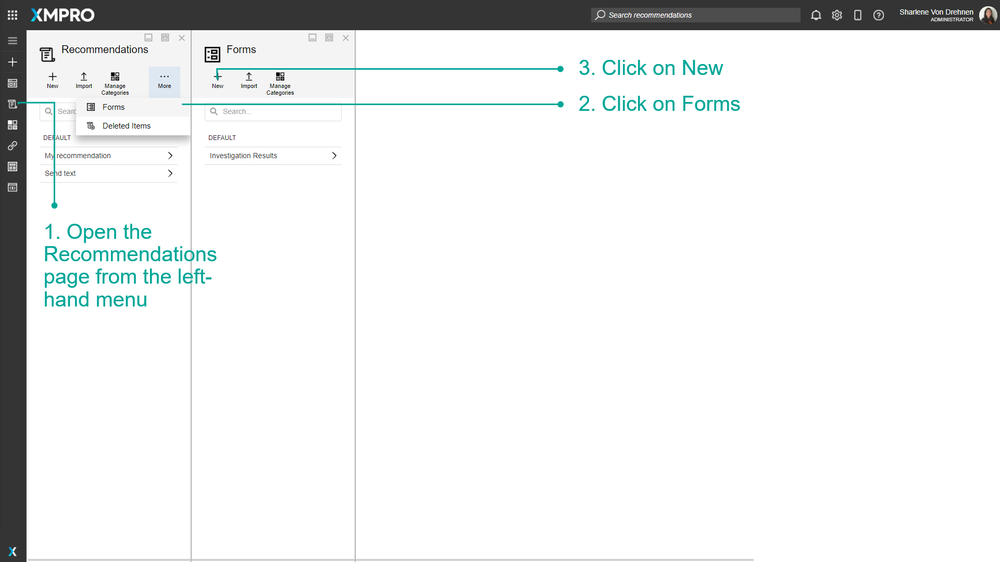

Manage Forms
A Form is a collection of fields that appear on Recommendation Alerts. Forms can be created and customized to suit the situation, depending on the Recommendation Alert. Forms are useful if you want relevant information, data, comments, or notes to be entered and changed over the course of resolving an Alert and while it is being actioned.
Note
It is recommended that you read the articles listed below to improve your understanding of Recommendations.
Creating a Form
To create a Form, follow the steps below:
- Open the Recommendations page from the left-hand menu.
- Click on Forms.
- Click on New.
- Enter new Form details.
- Click on Save.
- Drag the appropriate blocks onto the canvas to create the Form's labels and input fields.
- Highlight the block.
- Click on Field Properties.
- Change details for the block such as the label.
- Continue adding blocks until the Form is complete.
- Click on Save.



Highlighting any of the blocks also gives you the option to delete the block.

Blocks can also be reordered.

Using the Form with a Recommendation
To get the Form to appear on Recommendation Alerts, add the Form to the applicable rule that will trigger the alert.
- Open the Recommendations page from the left-hand menu.
- Select the Recommendation.
- Select the Rule.
- Enable the Form.
- Select which Form should show with the Recommendation Alert.
- Select the version of the Form.
- Click on Save.

Deleting the Form
To delete the Form, follow the steps below:
- Open the Recommendations page from the left-hand menu.
- Click on Forms.
- Click on the Form you want to delete.
- Click on Settings.
- Click on Delete.
Actions on the Form
Additional actions on the Form include:
Last modified: September 12, 2025